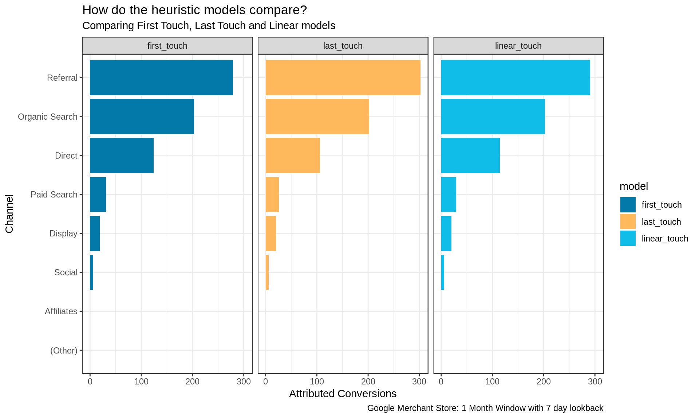

8 Heuristic Models
Here we will implement some non-algorithmic methods as a baseline. To do this we will use the ChannelAttribution R package
8.1 Transform Data
The ChannelAttribution package requires the data structured in a certain way. In this case it is in the form:
| path | conversion | non-conversions |
|---|---|---|
| direct > social > search | 10 | 154 |
| direct > direct > direct | 2 | 234 |
| referral > direct | 7 | 187 |
Here the touch points are transformed from into a single string path, separated by the > character. For each path we aggregate the total number of conversions that resulted from this pathway, and also the number of non-conversions.
If you are using marketing data from a system other than BigQuery, you will need to prepare your data per the above.
Now we can look at the steps required to transform our data from Chapter 7.
In this case we have the results saved as a CSV, but these may also be queried directly in R as per Section 6.2.4
library(tidyverse)
library(lubridate)
paths_raw <- read_csv('bigquery/bq-results.csv')Below is a snapshot of the top 20 rows. We can see from BigQuery it is in a standard ‘long’ format with one row per touch point based on the time stamp.
| fullVisitorId | visitStartTime | channelGrouping | outcome |
|---|---|---|---|
| 07184911138250312 | 2017-01-18 06:57:50 UTC | (Other) | non_conversion |
| 07184911138250312 | 2017-01-18 07:40:31 UTC | (Other) | non_conversion |
| 07184911138250312 | 2017-01-18 08:18:50 UTC | (Other) | non_conversion |
| 3112985461863519829 | 2017-01-25 20:42:23 UTC | (Other) | non_conversion |
| 4720404071621394560 | 2017-01-18 07:02:40 UTC | (Other) | non_conversion |
| 6060076679741207514 | 2017-01-18 06:59:27 UTC | (Other) | non_conversion |
| 0003297619580760716 | 2017-01-08 05:50:50 UTC | Direct | non_conversion |
| 00035794135966385 | 2017-01-20 12:46:25 UTC | Direct | non_conversion |
| 0004867638405459898 | 2017-01-15 14:22:26 UTC | Direct | non_conversion |
| 0005604256236421547 | 2017-01-24 21:04:26 UTC | Direct | non_conversion |
| 0006746295360194683 | 2017-01-24 05:16:18 UTC | Direct | non_conversion |
| 0009834325573666752 | 2017-01-24 22:43:34 UTC | Direct | non_conversion |
| 001324382917654255 | 2017-01-10 18:46:32 UTC | Direct | non_conversion |
| 0013701781325366363 | 2017-01-25 15:32:52 UTC | Direct | non_conversion |
| 0014256672578655164 | 2017-01-24 17:39:56 UTC | Direct | non_conversion |
| 0015731153666510386 | 2017-01-25 22:37:42 UTC | Direct | non_conversion |
| 0016316356325418630 | 2017-01-09 03:08:40 UTC | Direct | non_conversion |
| 0016883628233932470 | 2017-01-04 18:02:46 UTC | Direct | non_conversion |
| 0017373815580187343 | 2017-01-25 11:59:15 UTC | Direct | non_conversion |
| 0018094491063949293 | 2017-01-18 15:18:19 UTC | Direct | non_conversion |
We are using the tidyverse conventions here to make the interpretation easier. To translate we can see we start by formatting the time stamp correctly.
Next we rank the sessions by this time stamp for each visitor so we know which order the touch points occurred. We next restructure the data by summarising the touch points into one path string. Finally we count the occurrence of conversions and non-conversions.
paths <- paths_raw %>%
mutate(visitStartTime = ymd_hms(visitStartTime)) %>%
group_by(fullVisitorId, outcome) %>%
arrange(visitStartTime) %>%
summarise(path = paste(channelGrouping, collapse = ' > ')) %>%
ungroup() %>%
count(outcome, path, name = "n") %>%
spread(outcome, n) %>%
replace_na(list(conversion = 0, non_conversion = 0)) %>%
arrange(desc(conversion))| path | conversion | non_conversion |
|---|---|---|
| Referral | 178 | 4015 |
| Organic Search | 137 | 21659 |
| Direct | 71 | 9308 |
| Referral > Referral | 55 | 553 |
| Organic Search > Organic Search | 39 | 1507 |
| Direct > Direct | 26 | 803 |
| Referral > Referral > Referral | 26 | 132 |
| Paid Search | 21 | 1348 |
| Display | 12 | 256 |
| Direct > Referral | 11 | 60 |
8.2 Heuristic Models
Now that the data are in the correct format we can use the ChannelAttribution::heuristic_models() function to compare three common models: First Touch, Last Touch and Linear.
This function will automatically calculate the total number of conversion attributed to each channel using the above models.
The results across these three methods are very similar. We can see ‘Referral’ is the channel that is attributed the most credit for conversions, followed by ‘Organic Search’.
The Last Touch method provides slightly more credit to ‘Referral’ than other methods, in contrast to ‘Direct’, which is attributed more credit when using the First Touch method.
library(ChannelAttribution)
fit_h <- heuristic_models(Data = paths, var_path = 'path', var_conv = 'conversion')| channel_name | first_touch | last_touch | linear_touch |
|---|---|---|---|
| Referral | 279 | 302 | 290.46667 |
| Organic Search | 203 | 202 | 202.28333 |
| Direct | 124 | 106 | 114.31667 |
| Paid Search | 31 | 26 | 29.08333 |
| Display | 19 | 20 | 19.85000 |
| Social | 6 | 6 | 6.00000 |
| (Other) | 0 | 0 | 0.00000 |
| Affiliates | 0 | 0 | 0.00000 |
